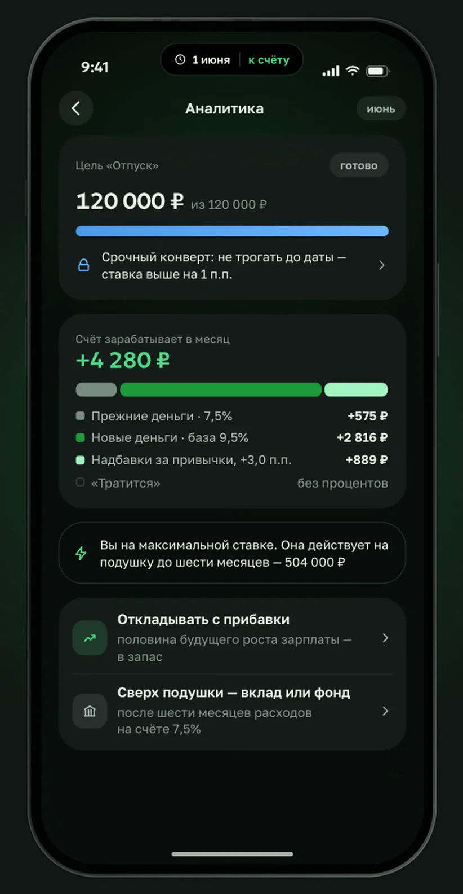

Отдельный экран. Все цифры считаются из состояния счёта.
Каждый блок подсказывает следующий шаг.

1
Запаса хватит на 3,9 месяца. Следующая ступень — шесть.
2
Полученные и ожидаемые надбавки.
3
Доля того, что копится, и суммы по конвертам.
4
Прогресс и способ прийти раньше.
5
Прежние деньги, сетка и надбавки отдельно, в рублях в месяц.
Запись кликабельного прототипа версии 2: март, июнь и экран аналитики. Открыть кликабельный прототип